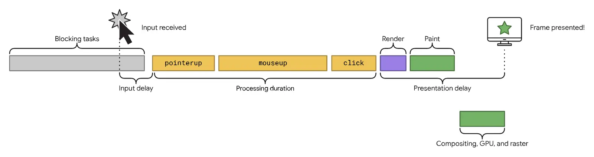

短答
输入之后的下一帧，要等主线程上正在占用它的其他工作。
很短的点击处理函数仍可能感觉迟，如果更早已经开始了一个长任务。图把这段等待、处理函数和绘制分开。SEO 健康可以指出模板上哪一段长。它不该给一个并未在这里测量的站点编造总毫秒数。
定义
交互到下次绘制看的是一次访问中的多次输入，不只是第一次。筛选、标签和零件号输入框才是目录上要紧的交互。轨迹如果显示输入堵在阻塞任务后面，那是关于模板主线程的证据。别处如果看到公开区间图，那是定义。它不是对 Mika、某位客户或本营销站的测量。
健康检查里怎么使用这个定义
点明买家使用的交互，以及输入到达时是否已有长任务在跑。
拆开长任务，或把第三方工作移开点击发生的时刻，改的是时间线上与缩小图片不同的一段。处理函数之后的渲染工作，即使脚本本身很短，也可能推迟下一帧。健康记录应该写明样例 URL 显示的是哪一段。关于新市场的增长计划并不会清空主线程。

要检查什么
- 买家在模板上真正触发的交互
- 输入到达时已经在跑的长任务
- 处理函数返回之后仍在继续的绘制工作
- 绑在点击时刻的第三方脚本
- 慢交互的一条样例 URL
一个结构示例
买家在钢材目录上打开材质筛选。处理函数只是切换一个列表，但分析脚本还在执行。下一帧因此等待。发现应落在脚本和筛选模板上。再发布一篇合金指南并不会让这一帧提前。
它不声称什么
解释输入延迟不保证排名或引用。
Mika Visibility 把它归到哪里
Mika Visibility 把它归在 SEO 健康：线上站点在技术上是否准备好被发现和理解。SEO 增长仍是关于覆盖和意图的另一个问题。GEO 健康与 GEO 增长保持各自的尺度。一条加载或响应性记录不会自动变成增长分数，也没有混合总分。
这张图是顺序示意图，因此文章可以讨论工作的先后，而不声称任何现场百分位。
常见问题
输入之后，是什么推迟了绘制？
输入之后的下一帧，要等主线程上正在占用它的其他工作。
健康记录应该点名什么？
点明买家使用的交互，以及输入到达时是否已有长任务在跑。
这种解释能保证排名吗？
解释输入延迟不保证排名或引用。
下一步
做一次结构化的 SEO + GEO 审计，查看健康发现、增长缺口和可以执行的蓝图。
更清晰的实体、答案、证据和上下文，会让页面更容易被理解与引用。任何回答产品中的结果都不作保证。